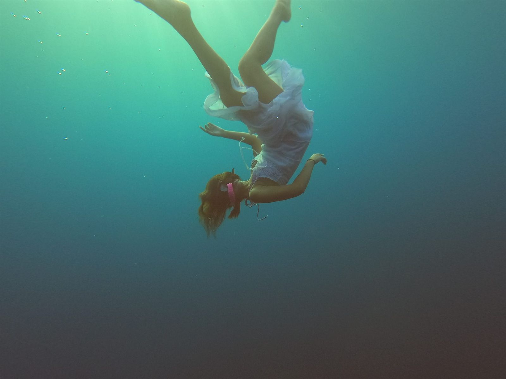
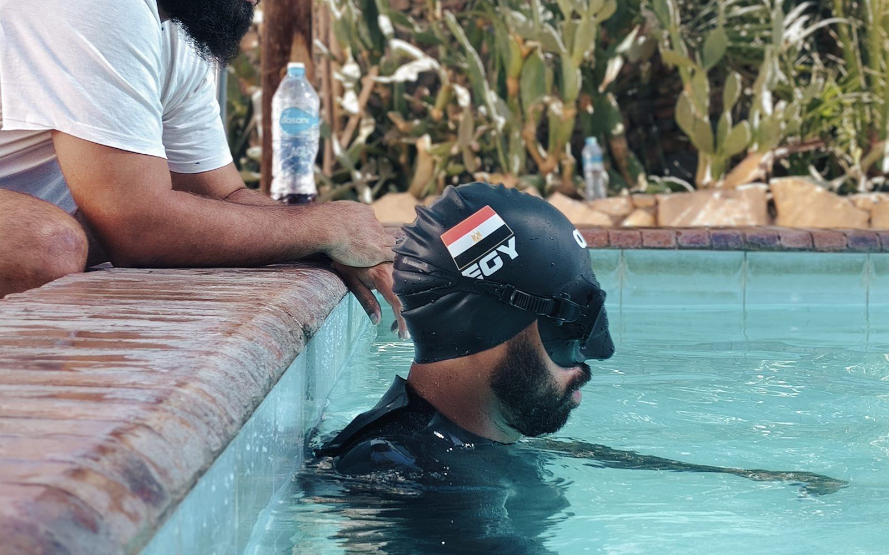
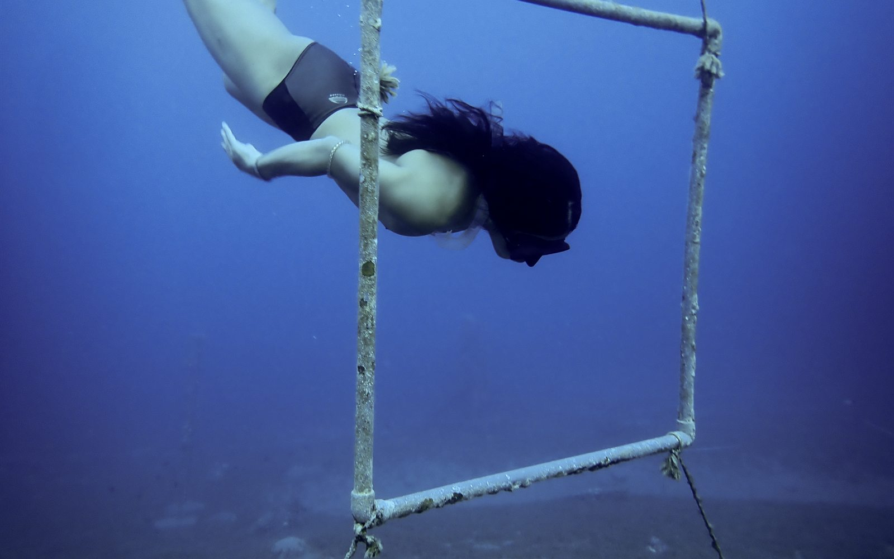
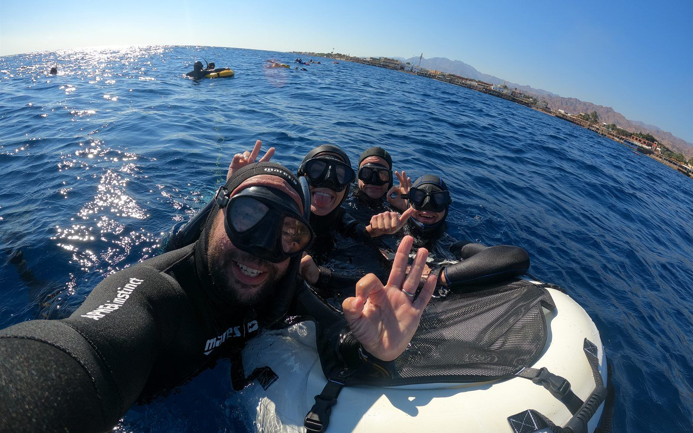
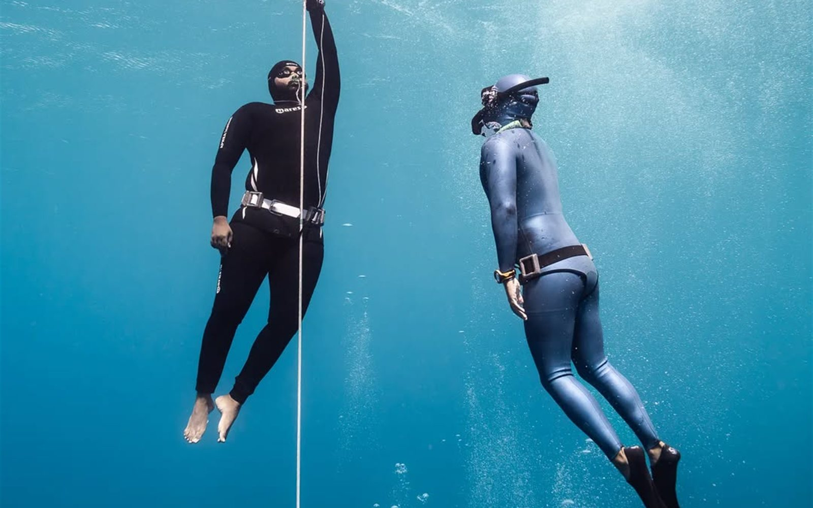

The mental game · ADHD
Freediving and ADHD: The Only Place My Brain Is Quiet
Traditional meditation can be a nightmare for an ADHD brain. Freediving quiets it through biology, not willpower, written by an instructor who has ADHD himself.

The mental game · Trauma-informed
Freediving and PTSD: Breaking the Freeze
Trauma lives in the body. Freediving works from the bottom up, using the water to help the nervous system unlearn its trauma response, safely and on your own terms.

Why freedive
Why Freedive: More Than a Breath-Hold
People come for the depth. They stay for the calm, focus, confidence and community it gives back to the rest of their life.

Physiology
How to Hold Your Breath Longer: The CO₂ Method
The urge to breathe is not oxygen running out. It is a CO₂ signal. Learning to read it, and calm it, is how depth actually happens.

Physiology
The Mammalian Dive Response: Your Built-In Superpower
Every human carries a physiological cascade that slows the heart, redirects blood, and extends breath-hold time. You were born with it. We teach you to activate it.

Courses
AIDA 1 vs AIDA 2: Which Course Is Right for You?
One day or three days? Pool only or open water? Here is everything you need to choose the right starting point for your freediving journey.

Barcelona
Freediving in Barcelona: The Complete Local Guide
Where to train, what conditions to expect, which sites are best for beginners, and what makes the Mediterranean one of Europe's finest freediving environments.

For Scuba Divers
Scuba Diver Trying Freediving: What to Expect
You know the underwater world. Now lose the tank. What changes, what transfers, and why scuba divers often fall in love with freediving within their first session.